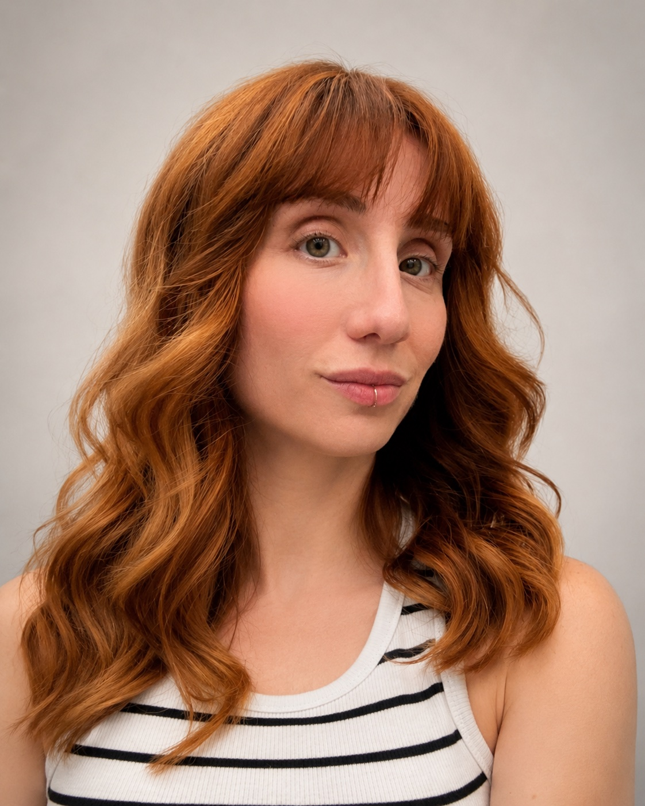
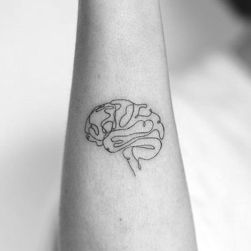
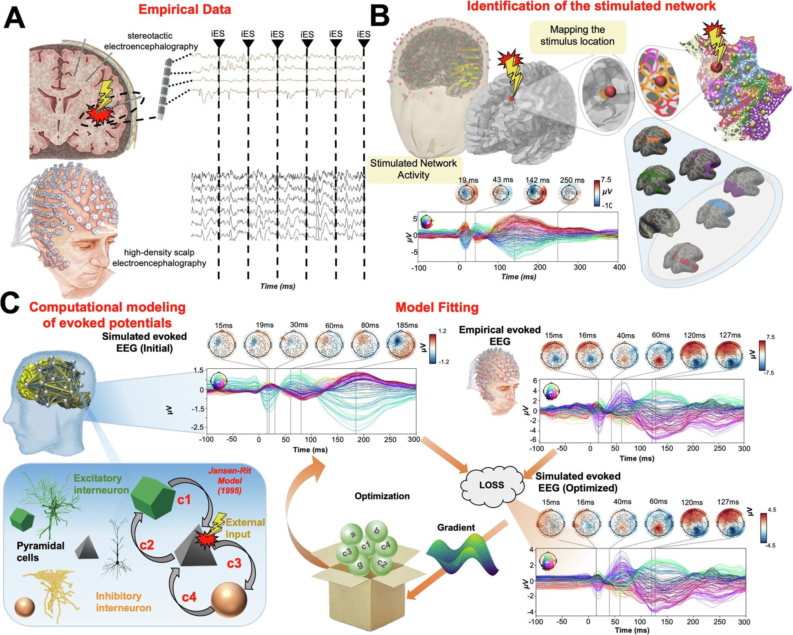
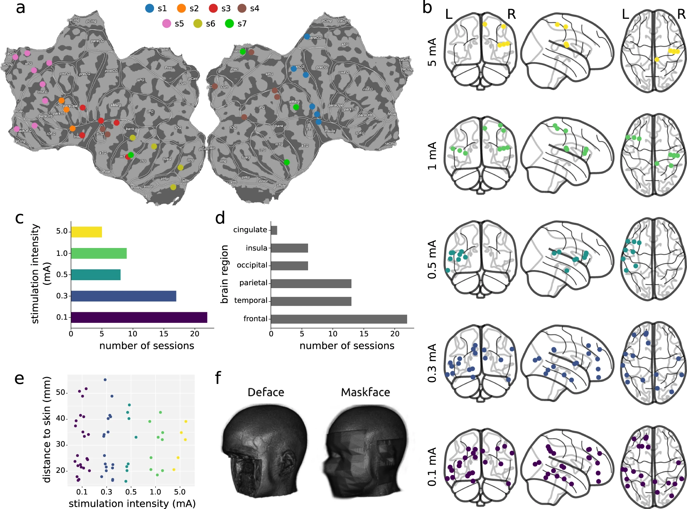
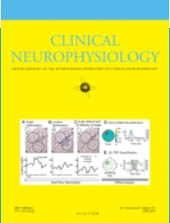

"Life's aim is an act, not a thought; albeit to refrain [from an act] is no less an act than other actions. Inhibition is, coequally with excitation, a nervous activity."
— Sir Charles Sherrington, The Brain and its Mechanism. Rede Lecture, University of Cambridge, 5 December 1933.
Can we read the brain’s control circuitry well enough to know when, where, and in whom to intervene? I investigate and improve brain stimulation systems, multi-scale recording pipelines, and open-source tools to inquire into cortical circuits and their functions, aiming at understanding what goes wrong in neurological and psychiatric conditions.

Talking the brain language means sometimes to perturb and stimulate the brain (with magnetic pulses, implanted electrodes, ultrasounds, etc.), but we still do it without fully understanding what the stimulation does to the underlying circuits, whether it arrives at the right moment, or why the same intervention helps one patient and harms another. My research aims at build theories and engineer the tools to close that gap.
Real-time EEG-triggered TMS systems that read cortical state and stimulate at the right moment — turning brain stimulation from a blunt tool into an intelligent, state-dependent intervention. Targeting the dlPFC for depression and cognitive control research.
Simultaneous intracranial (SEEG) and scalp EEG during brain stimulation, connecting deep circuit dynamics to what we can measure non-invasively. Ground-truth datasets for source localization and computational brain models.
Decoding how deep brain stimulation engages distinct thalamocortical pathways using scalp EEG biomarkers. What do we know about how DBS helps movement but sometimes affects mood?
NaviNIBS: a comprehensive neuronavigation toolbox integrating MRI-based targeting, real-time coil tracking, and stimulation delivery. The instruments we build should be accessible, not proprietary.

"The brain is wider than the sky" — Emily Dickinson. Sometimes the commitment is more than professional.
Figures from my open-access publications, reused under their Creative Commons licenses, and a journal cover featuring my work.



"Circuit Decoding Across Scales: DBS and EEG Integration in Parkinson's Disease for Motor and Non-Motor Symptoms." City College of New York. See schedule →
Three publications from multi-scale recording and stimulation mapping collaborations, including whole-brain excitability modeling and TMS vs. intracranial stimulation comparison.
Open-source neuronavigation toolbox for noninvasive brain stimulation is now available for the research community.
Horizon Europe MSCA Postdoctoral Fellowships. Project ReprInt: personalized closed-loop approaches to inhibitory control deficits in depression and OCD.
Scientific book translator and proofreader for Raffaello Cortina Editore, Milan (2014–present). Selected translations from English to Italian:
I have taught neuroscience and cognitive science at four institutions across two countries, in both English and Italian, from pre-college through graduate level. I have supervised 8 students through research internships and theses — two are co-authors on published papers.
Introductory Psychology (PSY 101) and upper-division Cognition (PSY 371).
Pre-college summer course introducing brain science to high school students.
Undergraduate courses bridging epistemology and psychology.
Graduate-level brain stimulation methodology for Master's in Mental Health.
I am exploring faculty opportunities and am available for collaborations, consulting, mentoring, and speaking engagements.